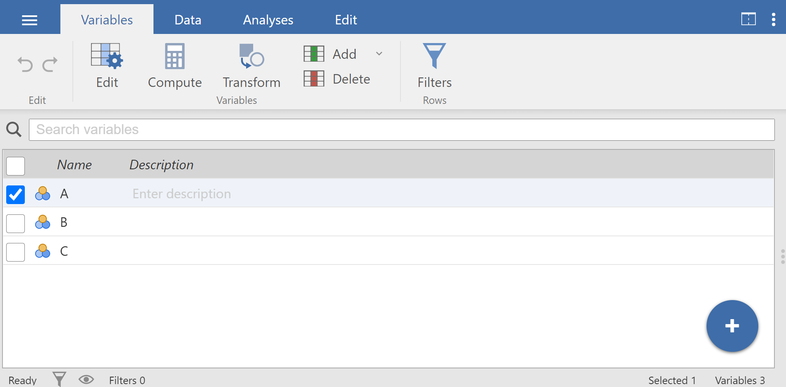
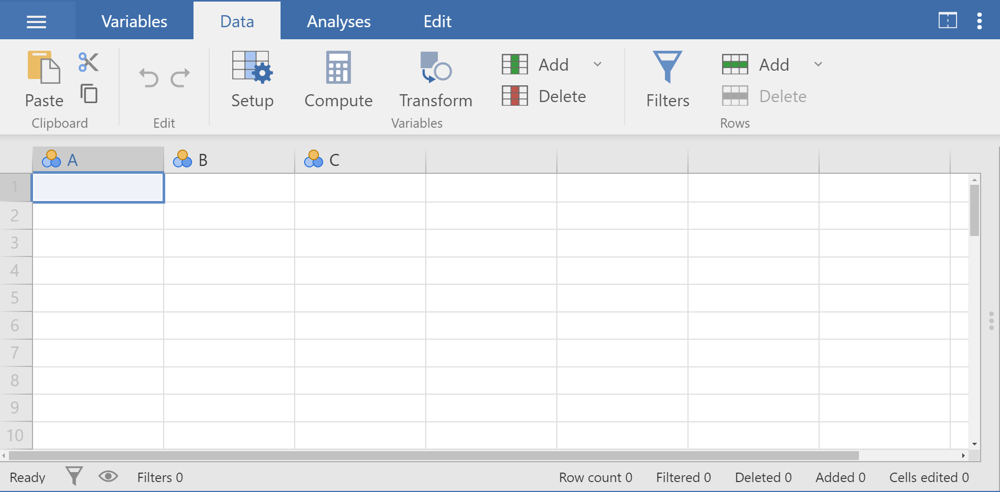

11 LAB I: Introduction to Jamovi
The goal of this lab is to introduce you to Jamovi, which we’ll be using throughout the course both to learn the statistical concepts discussed in the course and to analyze real data and come to informed conclusions.
11.1 Why Jamovi?
Jamovi is a new fee open “3rd generation” statistical software that is built on top of the programming language R (Figure 11.1). Designed from the ground up to be easy to use, Jamovi is a compelling alternative to costly statistical products such as SPSS and SAS.

11.2 Downloading and installing Jamovi
Jamovi is available for Windows (64-bit), macOS, Linux and ChromeOS. Installation on desktop is quite straight-forward. Just go to the Jamovi download page https://www.jamovi.org/download.html, and download the latest version (current release) for your operating system.
11.3 Navigating Jamovi
When first starting jamovi, we will be presented with a user interface which looks something like this Figure 11.2.
To the left is the spreadsheet view, and to the right is where the results of statistical tests appear. Down the middle is a bar separating these two regions, and this can be dragged to the left or the right to change their sizes.
Let’s take a quick look at the Jamovi Main Menu, referred to hereafter as the Menu, as shown in (Figure 11.3). This Menu is displayed at the very top of the Jamovi screen:

There are six tabs in the Menu (from left to right): 1. File (a layer with three horizontal levels \(\equiv\)), 2. Variables, 3. Data, 4. Analyses, 5. Edit, 6. Settings (the three dots \(\vdots\) at the top right of the window) tabs (Table 11.1).
| Menu tab | Toolbar |
|---|---|
|
 |
|
 This view allows us to easily navigate our variables and do the following:
|
|
 Specifically, this tab allows us to do the following:
|
|
We will spend most of our time in the Analyses Tab. The following six modules are pre-installed:
For example, if we want to perform regression analysis, we simply click the ’’Regression” button. All other modules need to be installed using the Modules button (Plus button) in your top-right |
|
We can add extra information to our results using the buttons that are very similar to what we would find in Word (though there are fewer options). |
|
We can apply our preferences for a number of settings such as:
|


11.4 Types of Variables in Jamovi
Data variables can be one of four measure types:
 Nominal: This type is for nominal categorical variables.
Nominal: This type is for nominal categorical variables.Ordinal: This type is for ordinal categorical variables.
 Continuous : this type is for variables with numeric values which are considered to be of Interval or Ratio scales.
Continuous : this type is for variables with numeric values which are considered to be of Interval or Ratio scales. ID: This will usally be our first column. This can be text or numbers, but it should be unique to each row.
ID: This will usally be our first column. This can be text or numbers, but it should be unique to each row.
and one of three data types:
Integer: These are full numbers e.g. 1, 2, 3, ... 100, etc. - Integers can be used for all three measure types . When used for Nominal/Ordinal data numbers will represent labels e.g. male=1; female=2.
Decimal: These are numbers with decimal points. e.g. 1.3, 5.6, 7.8, etc. - This will usually only be used for continuous data.
Text: This can be used for ordinal and nominal data.
The measure types are designated by the symbol in the header of the variable’s column. Note that some combinations of data-type and measure-type don’t make sense, and Jamovi won’t let us choose these.
| Measure | |||
|---|---|---|---|
| Data | Nominal | Ordinal | Continuous |
| Integer | \({\checkmark}\) | \({\checkmark}\) | \({\checkmark}\) |
| Decimal | \({\checkmark}\) | ||
| Text | \({\checkmark}\) | \({\checkmark}\) |
11.5 Importing our Data
It is possible to simply begin typing values into the Jamovi spreadsheet as we would with any other spreadsheet software. Alternatively, existing data sets in a range of formats (OMV, Excel, CSV, SPSS, R data, Stata, SAS) can be opened in Jamovi.
To open a file, select the File tab  at the top left hand corner, select ‘Open’ and then ‘This PC’, and choose from the files listed on ‘Browse’ that are stored on our computer:
at the top left hand corner, select ‘Open’ and then ‘This PC’, and choose from the files listed on ‘Browse’ that are stored on our computer:
flowchart LR A[File tab ] -.-> B(Open) -.-> C(This PC) -.-> D(Browse) -.-> E(Open our file)